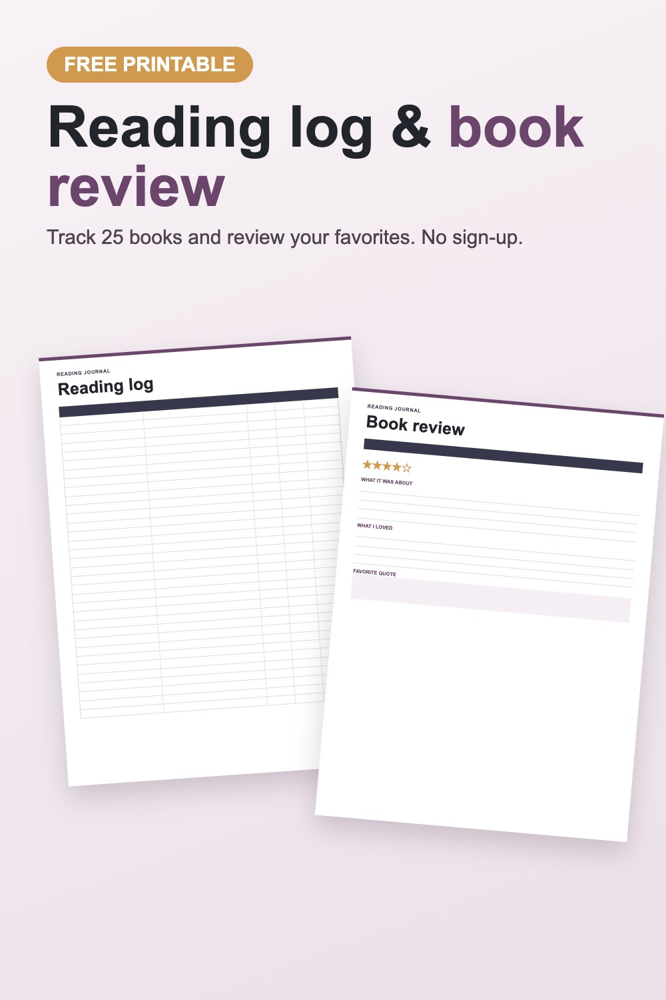

Keep track of every book you read this year: title, author, start and finish dates and a five-star rating for 25 books, plus a book review page for your favorites. No sign-up, just download.
Download free PDF (A4)Download free PDF (US Letter)
Keep the log inside the book you are reading so it is always at hand. Fill in the start date on the first page and the rest when you finish. Print a few copies of the review page and use them only for books you want to remember. A fresh log each January makes a nice record of your reading years.
The 30-page Reading Journal adds 10 review pages, a bookshelf to color in, a 30-book reading challenge, to be read lists, a daily reading habit tracker, a series tracker and book club notes. Hyperlinked for iPad.
See the reading journalMore free printables: free 2027 goal setting worksheet, free 2027 calendar.